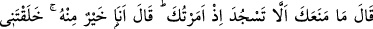
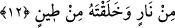

“Sizi yarattık, sonra size biçim verdik.” Babanız Âdem (a.s.)’ı balçıktan özel bir
şekli olmaksızın yarattık. Sonra ona bir suret (şekil) verdik.
Burada Hz. Âdem’in yaratılması ve ona şekil verilmesi, bütün insanların yaratılması
ve onlara şekil verilmesi gibi ifâde edilmiştir. Çünkü onun yaratılması ve ona şekil
verilmesinden kasıt, evlâdları vasıtasıyla yeryüzünün imar edilmesidir. Bu sebeple
Âdem (a.s.)’ın yaratılması, evladlarının yaratılması makamındadır. Şu halde “sizi
yarattık” ifâdesinin kullanılması mecazi anlamdadır.
“Sonra da” bütün “meleklere: ‘Âdem’e secde edin.’ dedik.” Bu secde, onu
selâmlamak ve ona hürmet arzetmek anlamındaki secdedir. Çünkü şer’i anlamda secde,
ibadet kasdıyle alnı yere koymaktır ki o, gerçek anlamda sadece Allah Teâlâ’ya
mahsustur.
Bu emirden sonra melekler itiraz etmeksizin “hepsi secde ettiler, yalnız İblis etmedi,
o” Âdem (a.s.)’a “secde edenlerden olmadı.” Halbuki o, Allah’a secde edenlerdendi.
12. Allah buyurdu: Ben sana emretmişken seni secde etmekten alıkoyan nedir?
(İblis): Ben ondan daha üstünüm. Çünkü beni ateşten yarattın, onu çamurdan
yarattın, dedi.
Sanki “O zaman, Allah ne buyurdu?” diye bir soru sorulmuş ve cevap olarak şöyle
denilmiştir: “Allah buyurdu: Sana emrettiğim zaman seni secde etmekten alıkoyan
nedir?”
İblis: “Ben ondan hayırlıyım.” Benim ondan üstün ve faziletli olmam, Âdem’e secde
etmeme mani oldu. Çünkü sen “beni ateşten yarattın, onu çamurdan yarattın.” dedi.”
Ateş, latif, nûrânî bir cevherdir. Balçık ise kesif ve zulmânî bir cisimdir. Bu sebeple
ateş, çamurdan üstündür.
Mel’un İblis burada hata etti: Çünkü üstünlüğün, maddenin unsurlarında olduğunu
zannetti.
Mesnevî’de şöyle denilmektedir:
Şeytan Âdem’e bakınca, yalnızca sûreti gördü
Manayı anlamadı, bu yüzden dergahtan sürüldü
Halbuki bu sûret değildir, gözünü iyice ov
Bak da ululuk nurunun kalkınmasını gör
Yine ne güzel söylenmiştir: